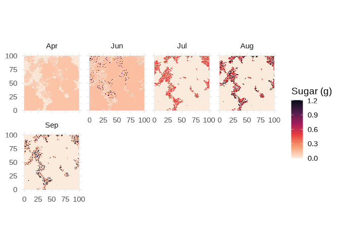
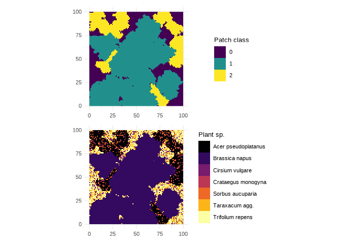
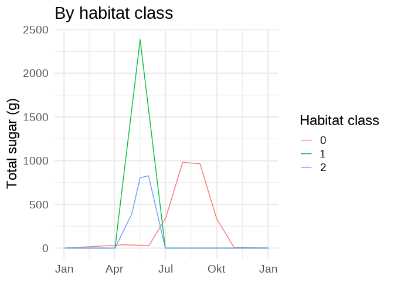
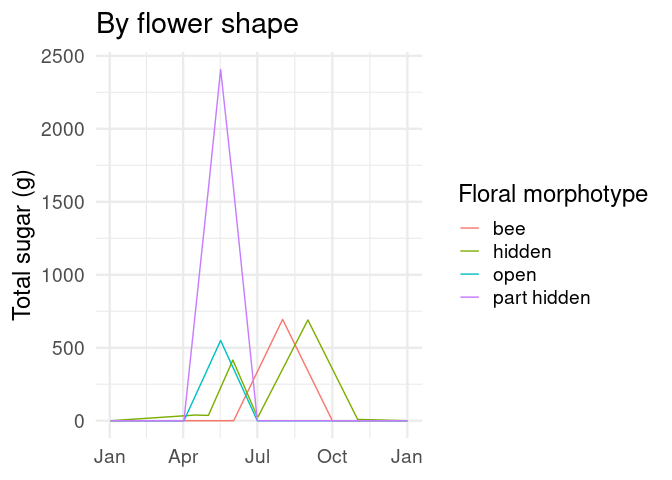
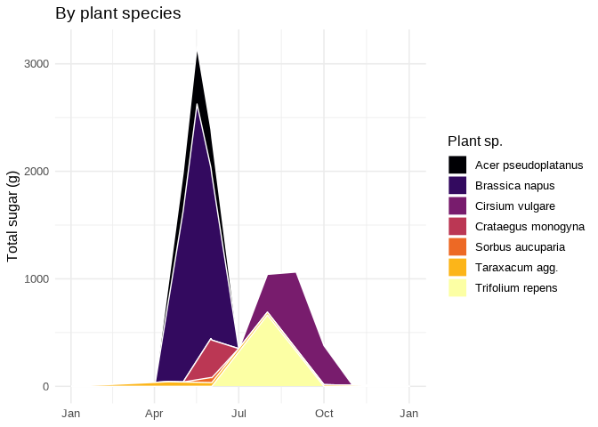

Overview
Together, flowering plants and flower-visiting animals account for about 1/3 of all described extant species of eukaryotic life on Earth. The trophic interface between flowers and florivores is, therefore, one of the chief foundations of global biodiversity, and patterns of floral resource availability can be expected to govern abundance, diversity, and functional relationships at higher trophic levels. sweetworld is a sandbox for exploring landscape-scale patterns of floral resource availability arising from simulated floral communities.
1. Generate landscape
Landscape are generated with the function landgen(), which serves as a wrapper for functions in the package landscapeR (Masante 2017). At present, the function is hardcoded to produce a 3-class landscape (e.g. crop, forest, herbaceous), but I plan to make this more flexible in later versions of the package.
The following code produces a 100 x 100 cell raster (area = 10000); if each cell is taken to represent 1 m2, the result is a one hectare landscape. Class 0 represents the background matrix on which patches of class 1 and class 2 are generated. The proportional abundance of classes 1 and 2 are controlled by prop1 and prop2, respectively, with the proportional abundance of class 0 equal to 1 - (prop1 + prop2). The grain size of the landscape is controlled by n1 and n2, which determine the number of patches over which the total area of class 1 and class 2 are distributed. Note that patches can become contiguous.
2. Tabulate landscape
The next step is to tabulate the raster generated by landgen, simulate a floral community, and join that floral community to a table of floral traits. These steps are done by landtab.
Flora are assigned to landscape cells using the arguments comp0, comp1, and comp2, which control the floral composition of habitat classes 0, 1, and 2, respectively. In the simplest case, each habitat class could be assigned a single floral species. In most cases, though, we probably want to assign multiple species to one or more of the classes. In the code below, habitat class 1 is simulated as pure Brassica napus, representing oilseed rape fields, but classes 0 (representing non-crop herbaceous habitat) and 1 (representing forest) are assigned multiple species. If a habitat class is assigned multiple species, each landscape cell is assigned a single species drawn randomly from the vector of species assigned to the class to which it belongs. The relative abundance of each species within each class is controlled by the arguments prob0, prob1, and prob2, each of which consists of a vector of weights that govern the random sampling process. For ease of interpretation, these weights should sum to 1, but the base R function sample() that works behind the scenes of landtab will accept any vector of weights and automatically rescale them.
Once a plant species has been assigned to each cell of the landscape (now formatted as a row in a data table), we can add floral traits from a table specified by traitTab. Of course, one’s choice of plant species above has to correspond to species present in the trait table. At minimum, this table must include the following traits:
- Plant name (the name of this column can vary — see
plantNamesargument) -
flower.density.peak(flowers per square meter at peak bloom) -
bloom.start(end of bloom, day of year) -
bloom.end(end of bloom, day of year) -
bloom.peak(end of bloom, day of year) -
sugar.per.flower(micrograms of suger per flower per day)
In this case, our trait table is baude_traits (shipped with the package), which is a modification of the trait table provided by Baude et al. (2016) (Supplemental Table 11). In addition to the required traits listed above, baude_traits includes a handful of functional traits that can be used to parse floral resource availability in ecologically meaningful ways. The argument plantNames simply gives the name of the column in the trait table that contains the plant names.
land1_tab <- landtab(land1,
comp0 = c("Cirsium vulgare", "Trifolium repens", "Taraxacum agg."),
comp1 = c("Brassica napus"),
comp2 = c("Acer pseudoplatanus", "Crataegus monogyna", "Sorbus aucuparia"),
prob0 = c(0.2, 0.5, 0.3),
prob1 = c(1),
prob2 = c(0.8, 0.1, 0.1),
traitTab = baude_traits,
plantNames = "name.latin")At this point, let’s pause and appreciate the beautiful world we’ve simulated.
# Classes
plot1 <- ggplot(land1_tab, aes(x, y, fill = class)) +
geom_raster() +
theme_minimal(10) +
scale_fill_viridis_d() +
labs(fill = "Patch class", x = NULL, y = NULL) +
coord_fixed()
# Plants
plot2 <- ggplot(land1_tab, aes(x, y, fill = plant)) +
geom_raster() +
theme_minimal(10) +
scale_fill_viridis_d(option = "inferno") +
labs(fill = "Plant sp.", x = NULL, y = NULL) +
coord_fixed()
plot1 / plot2
3. Extend landscape through time
Now that we have simulated our floral communities in terms of composition, we need to vary the floral density of each plant species through time according to a function representing its phenology. This is the job of landpheno. First, it takes the tabulated landscape and performs a crossing join with a vector of time steps defined by the arguments first and last. By default, these take the values of 0 (Jan 1) and 364 (Dec 31), generating a time series representing daily intervals for one year. Then, it calculates a triangular density function (Carnell 2019) for each plant species using bloom.start, bloom.peak, and bloom.end. At bloom.peak, the function equals 1, and it declines linearly to 0 as it approach bloom.start and bloom.end. The value of this function is then multiplied by flower.density.peak for each plant species to calculate the floral density in each landscape cell on each day of the time series. Finally, flower density is multiplied by sugar.per.flower to get the total nectar sugar in each cell on each day.
This is the most computationally intensive step of the workflow, since it involves the generation of a data frame with (last - first) * area rows. For this reason, increasing the initial raster size beyond 100 x 100 is likely to cause memory problems relatively quickly. Simulating landscapes larger than 1 hectare could be achieved simply by imagining each cell to represent, say, 5 x 5 m and adjusting the interpretation of the model accordingly.
At this juncture, we can pause again for visualization. By taking the mean sugar availability of each patch over monthly intervals, we can generate a short time series of maps that illustrate how the spatial distribution of floral resource availability varies through the year.
land1_pheno_nest <- land1_pheno %>%
group_by(time, date) %>%
nest() %>%
filter(date == "1970-03-01" | # when we convert day of year to date, it defaults to UNIX epoch
date == "1970-04-01" |
date == "1970-05-01" |
date == "1970-06-01" |
date == "1970-07-01" |
date == "1970-08-01" |
date == "1970-09-01" |
date == "1970-10-01") %>%
unnest(cols = data)
land1_pheno_monthly_mean <- land1_pheno %>%
group_by(x, y, month) %>%
summarize(mean.sugar = mean(sugar)) %>%
filter(month %in% c("Mar", "Apr", "May", "Jun",
"Jul", "Aug", "Sep", "Oct"))
ggplot(land1_pheno_monthly_mean, aes(x, y, fill = mean.sugar)) +
geom_raster() +
theme_minimal(12) +
#scale_fill_gradient(low = "white", high = "red") +
scale_fill_viridis_c(option = "rocket", direction = -1) +
labs(fill = "Sugar (g)", x = NULL, y = NULL) +
coord_fixed() +
facet_wrap(~month)
4. Tally landscape
Finally, we can focus on temporal patterns of floral resources by tallying the total sugar availability of the landscape for each time step (i.e. day). The function landtally performs this operation, optionally parsing total sugar availability by a given criterion corresponding to a categorical variable in the trait table (e.g. botanical family, floral morphotype) or the variable class representing the habitat classes of the initial raster.
land1_tally_agg <- landtally(land1_pheno)
land1_tally_class <- landtally(land1_pheno, criterion = class)
land1_tally_plant <- landtally(land1_pheno, criterion = plant)
land1_tally_morph <- landtally(land1_pheno, criterion = flower.shape) With these tallied data, we can visualize variation in resource availability using line or area plots.
ggplot(land1_tally_agg, aes(date, total.sugar)) +
geom_line() +
theme_minimal(16) +
scale_x_date(date_labels = "%b") +
labs(x = NULL, y = "Sugar (g)", title = "Aggregate")
ggplot(land1_tally_class, aes(date, total.sugar, color = class)) +
geom_line() +
theme_minimal(16) +
scale_x_date(date_labels = "%b") +
labs(x = NULL, y = "Total sugar (g)", color = "Habitat class",
title = "By habitat class") 
ggplot(land1_tally_plant, aes(date, total.sugar, color = plant)) +
geom_line() +
theme_minimal(16) +
scale_x_date(date_labels = "%b") +
labs(x = NULL, y = "Total sugar (g)", color = "Plant sp.",
title = "By plant species")
ggplot(land1_tally_morph, aes(date, total.sugar, color = flower.shape)) +
geom_line() +
theme_minimal(16) +
scale_x_date(date_labels = "%b") +
labs(x = NULL, y = "Total sugar (g)", color = "Floral morphotype",
title = "By flower shape") 
ggplot(land1_tally_plant, aes(date, total.sugar, fill = plant)) +
geom_area(color = "white") +
theme_minimal(16) +
scale_x_date(date_labels = "%b") +
scale_fill_viridis_d(option = "inferno", direction = 1) +
labs(x = NULL, y = "Total sugar (g)", fill = "Plant sp.",
title = "By plant species") 
References
Baude, Mathilde, William E Kunin, Nigel D Boatman, Simon Conyers, Nancy Davies, Mark A K Gillespie, R Daniel Morton, Simon M Smart, and Jane Memmott. 2016. “Historical Nectar Assessment Reveals the Fall and Rise of Floral Resources in Britain.” Nature 530 (7588): 85–88.
Carnell, Rob. 2019. Triangle: Provides the Standard Distribution Functions for the Triangle Distribution. https://CRAN.R-project.org/package=triangle.
Masante, Dario. 2017. landscapeR: Categorical Landscape Simulation Facility. https://CRAN.R-project.org/package=landscapeR.